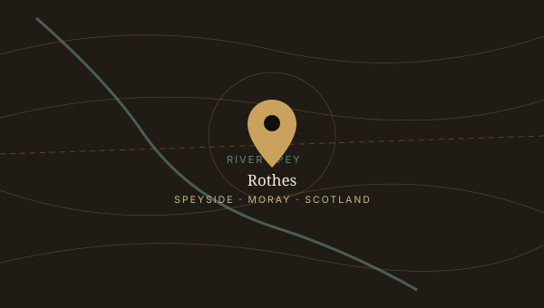
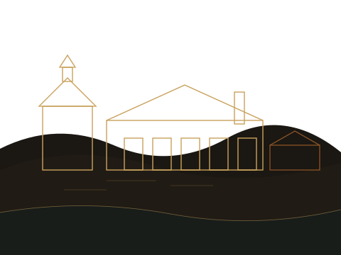

A single-minded distillery on the Burn of Rothes
For nearly a century and a half, one distillery in the small town of Rothes has made one style of whisky, one deliberate way.
Why Rothes
The distillery sits where it does for a simple reason: the water. Soft spring water rises in the hills above town, filtered through peat and rock before it ever reaches a mash tun. The founders built here and never had cause to move.
Speyside itself — the river valley cutting through the Highlands — has quietly become the most concentrated whisky-producing region on earth, prized for a climate that lets spirit mature slowly and evenly, without the extremes that can rush or roughen a cask.

Cask before age statement
Long before it was fashionable, this distillery built its reputation on the cask, not the calendar. Whisky is filled almost entirely into sherry-seasoned oak — first-fill and refill European and American casks, seasoned specifically for maturation rather than repurposed from other trades.
Our cellar master's job is not to hit a target date. It's to taste, cask by cask, and decide — sometimes early, sometimes decades later — when a whisky has become what it was always going to be.

145 years, in brief
Founded on the Burn of Rothes
A group of local investors and farmers established the distillery beside the burn, drawn by the reliability and quality of the local spring water.
A reputation for blending quietly builds
Long before single malt was marketed on its own, whisky from Rothes was quietly prized by blenders across Scotland for its consistency and fruit character.
Commitment to sherry oak deepens
As the house style solidified, the distillery leaned further into first-fill and refill sherry-seasoned casks, favouring depth and roundness over speed.
Single malt takes its place on the shelf
The whisky began to be bottled and released under its own name, introducing drinkers directly to a style previously known mostly to blenders.
Same water, same patience
The stills have changed shape and size over the decades; the water, the cask philosophy, and the unhurried approach to maturation have not.
The story is easier to taste than to tell
Walk the warehouses, meet the team, and try a dram straight from the cask on a visit to Rothes.
Plan Your Visit